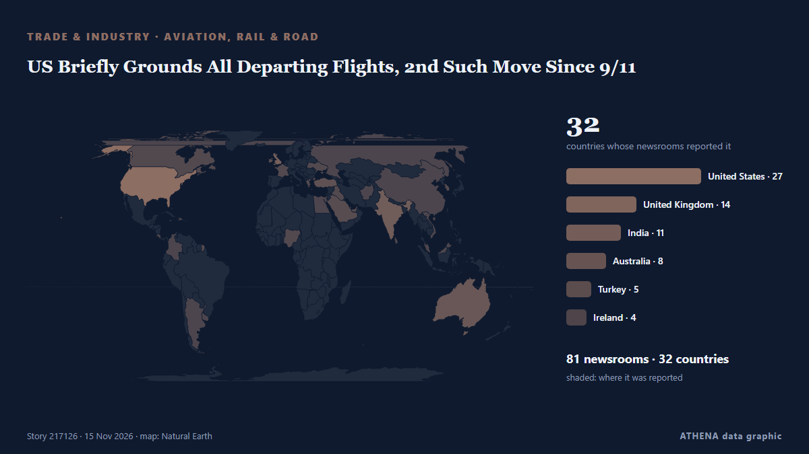

US Briefly Grounds All Departing Flights, 2nd Such Move Since 9/11

The nationwide ground stop was the first since January 2023, when a key FAA computer system malfunctioned, and the second since the aftermath of the September 11, 2001, attacks. from NDTV
Reported independently by 80 outlets in 32 countries since 13 Nov, first by to vima; coverage is fading. ATHENA rates the risk elevated (4.2/10), driven mainly by the severity of the harm described and its geographic and sector reach. Confidence is 89% (high), with 80 independent outlets corroborating it and an average source reliability of 72%. Outlets by country: United States (12), Ireland (4), India (3). Coverage: 13 Nov to 13 Nov, 1 hours.
Why it matters: Disruption to trade, industry or infrastructure travels along supply chains, changing costs and delivery times far away.
What changed: 9 new reports from 8 outlets in the 24 hours to 15 Nov.
First reported as: Flights halted at US airports amid air traffic control communications problems
AutomatedSelected, grouped and scored by ATHENA's published method from 39 independent outlets. The headline is the outlet's own; ATHENA's sentences follow fixed patterns - no generative AI writes them. How it works →
How to read this page
- What you are reading
- 80 outlets in 32 countries reported this event. The reports below are listed in the order they appeared; each headline opens the original article. ATHENA writes none of the reports.
- Our reading
- For the record — The reports describe a completed, domestic, commercial or personal matter. We list it so you can see who reported it and when. We are not tracking a risk of wider conflict here.
- How much evidence
- Fair Several independent outlets agree, but the picture could still change.
After repeats, off-topic items and stale reports are removed, 26 of the 40 listed reports are counted; 75% of the headlines match the event.
- What this does not mean
- ATHENA measures how an event is reported, not whether it is true. This is not a forecast, a judgement on who is right, or advice.
- What would change it
- Reports from other independent outlets showing a different development, or a firm confirmation or denial from an official source.
Reading R2 · refreshed with every update of this page. ATHENA has not yet published a track record for these readings; when it does, it will be linked here.
At a glance
Selected, scored and written by ATHENA's published methodology. No editor intervenes in individual events. How this is produced ›
| 13 Nov 20:45 UTC | 50 |
|---|---|
| 13 Nov 22:45 UTC | 22 |
| 14 Nov 00:45 UTC | 20 |
| 14 Nov 02:45 UTC | 8 |
| 14 Nov 04:45 UTC | 2 |
| 14 Nov 06:45 UTC | 0 |
| 14 Nov 08:45 UTC | 1 |
| 14 Nov 10:45 UTC | 1 |
| 14 Nov 12:45 UTC | 1 |
| 14 Nov 14:45 UTC | 0 |
| 14 Nov 16:45 UTC | 0 |
| 14 Nov 18:45 UTC | 0 |
| 14 Nov 20:45 UTC | 0 |
| 14 Nov 22:45 UTC | 0 |
| 15 Nov 00:45 UTC | 0 |
| 15 Nov 02:45 UTC | 1 |
| 13 Nov 22:06 UTC | 0.0 |
|---|---|
| 13 Nov 22:26 UTC | 1.3 |
| 13 Nov 22:35 UTC | 4.0 |
| 13 Nov 22:43 UTC | 4.8 |
| 14 Nov 01:24 UTC | 4.7 |
| 14 Nov 05:35 UTC | 5.1 |
| 14 Nov 05:47 UTC | 4.6 |
| 15 Nov 03:59 UTC | 4.2 |
Why these numbers
Importance
Risk
Confidence
The reporting — who reported it, and when
headline as published · opens the original- to vima · GreeceFAA Grounds Flights Nationwide Across US Following Comms Failure
- TRT World · TurkeyUS grounds all fights nationwide over 'communication issue'
- Times of India · India'Extraordinary circumstances': US grounds all departing flights over safety concerns
- The Hill · United StatesFAA orders nationwide ground stop
- ABC News Australia · AustraliaBreaking: US aviation administration orders grounding of all flights
- The National Herald · United StatesFlights Halted at Airports across US Due to Air Traffic Control Communications Problems
- RTÉ News · IrelandWidespread disruption as departing flights grounded in US
- Forbes Business · United StatesGround Stop Ordered At All U.S. Airports Over ‘Extraordinary Circumstances,’ FAA Says
- Haaretz (English) · IsraelU.S. resumes flights after nationwide communications failure
- Arab News · Saudi ArabiaUS grounds flights nationwide after air traffic control communications outage
- France 24 English · FranceUS flight authority orders national ground stop over air traffic control 'communication issue'
- The Tico Times · Costa RicaCosta Rica Flights Caught in Only the Third Nationwide US Ground Stop Ever
- Al Jazeera English · QatarUS flights resume after FAA lifts hours-long nationwide ground stop
- SecurityWeek · United StatesFAA Ground Stop Issued Due to ‘Extraordinary Circumstances’
- The Straits Times · SingaporeUS resumes flights after air traffic network failure sparks chaos
- Anadolu Agency (English) · TurkeyNationwide ground stop issued at US airports over 'communication issue': Transport secretary
- Irish Mirror · IrelandAll flights at US airports stopped due to 'extraordinary circumstances'
- Indian Express · IndiaFlights halted at airports across US due to ATC communications problems: FAA
- Irish Examiner · IrelandAll flights grounded at US airports due to 'extraordinary circumstances'
- The Irish News (Belfast) · United KingdomFlights halted at US airports amid air traffic control communications problems
- Belfast Telegraph · United KingdomFlights halted at US airports amid air traffic control communications problems
- Gothamist (New York City) · United StatesNYC and NJ travelers may face long delays as air travel resumes nationwide
- WalesOnline · United KingdomAll departing US flights grounded due to 'extraordinary circumstances'
- Le Monde (English) · FranceUS airspace opens after all flights grounded due to air traffic control communications problems
- Simple Flying · United StatesFAA Lifts Multi-Hour Nationwide Ground Stop Linked To "Instability" Of Radar & ATC Communications
- Wired · United StatesFAA Grounds All US Flights Until Further Notice
- Shafaq News (English) · IraqFAA halts US flights over communications issue
- TechCrunch · United StatesUS government grounds all flights across the United States ‘due to extraordinary circumstances’
- Gulf News · United Arab EmiratesUS orders nationwide flight ground stop: Are UAE flights affected?
- NPR · United StatesOld tech blamed for the ground stop that caused flight chaos: 'It got overloaded'
- Skift · United StatesFAA Orders Rare Nationwide Ground Stop Over Air Traffic Control Comms Issue
- TheJournal.ie · IrelandUS air officials ground all flights due to communications problem
- Inc. · United StatesFAA Grounds All Departing U.S. Flights After Nationwide Communications Failure
- KQED News (San Francisco) · United StatesHundreds of Bay Area Flights Cancelled, Delayed During FAA Ground Stop
- The Bahamas Tribune · BahamasFlights halted at airports across US due to air traffic control communications problems, FAA says
- ABC News Australia · AustraliaLive: All US departing flights grounded due to communication issues
- Colombia One · ColombiaUS Suspends All Domestic Flights Due to “Extraordinary Circumstances”
- Jamaica Observer · JamaicaFAA grounds all flights across US amid communications problem
- NDTV · IndiaUS Briefly Grounds All Departing Flights, 2nd Such Move Since 9/11
- Kyiv Independent · UkraineFAA orders nationwide ground stop for all US flight departures